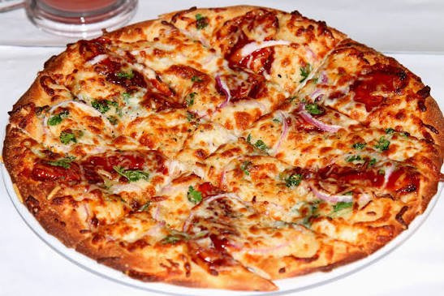

This BBQ Chicken Pizza starts with a store-bought or homemade 12-inch crust brushed generously with spicy barbecue sauce as its base instead of traditional tomato sauce. It's topped with cubed cooked chicken breast, chopped red onion, and a distinctive addition of sliced pepperoncini peppers, which give the pizza a tangy, mildly spicy kick that sets it apart from more standard BBQ chicken pizza recipes.
The whole thing is finished with a generous layer of shredded Colby-Jack cheese and fresh cilantro, then baked at 350°F until the cheese turns melted and bubbly, about 15 minutes. It's a simple, family-friendly recipe that swaps the usual mozzarella-and-basic-onion combo for bolder, tangier flavors, making it a popular choice for home cooks looking to recreate a pizzeria-style BBQ chicken pizza.